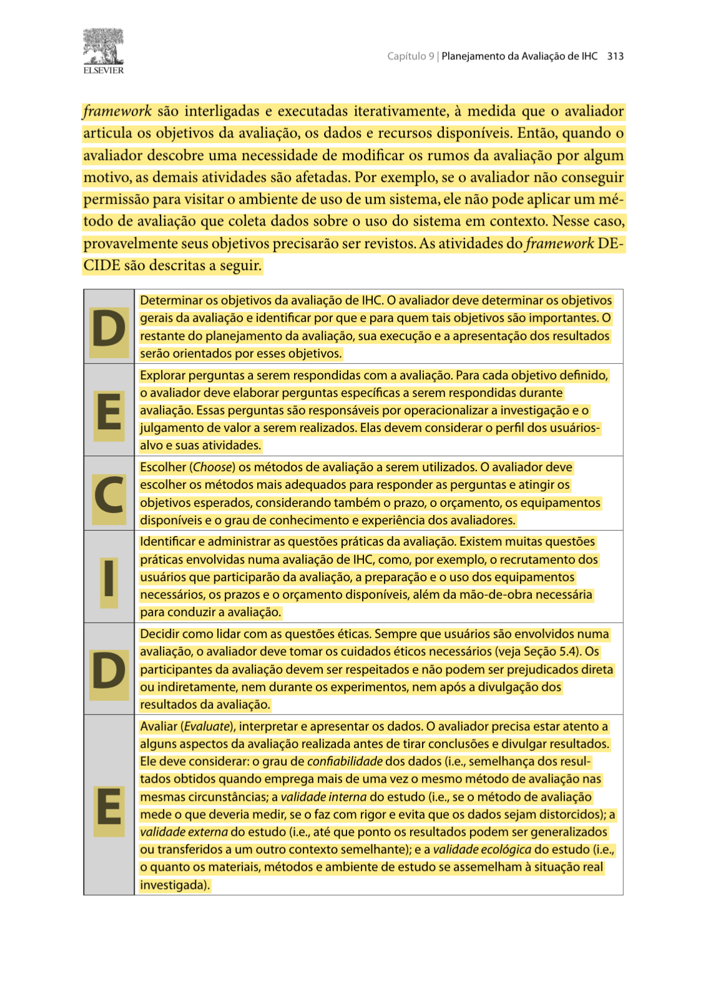
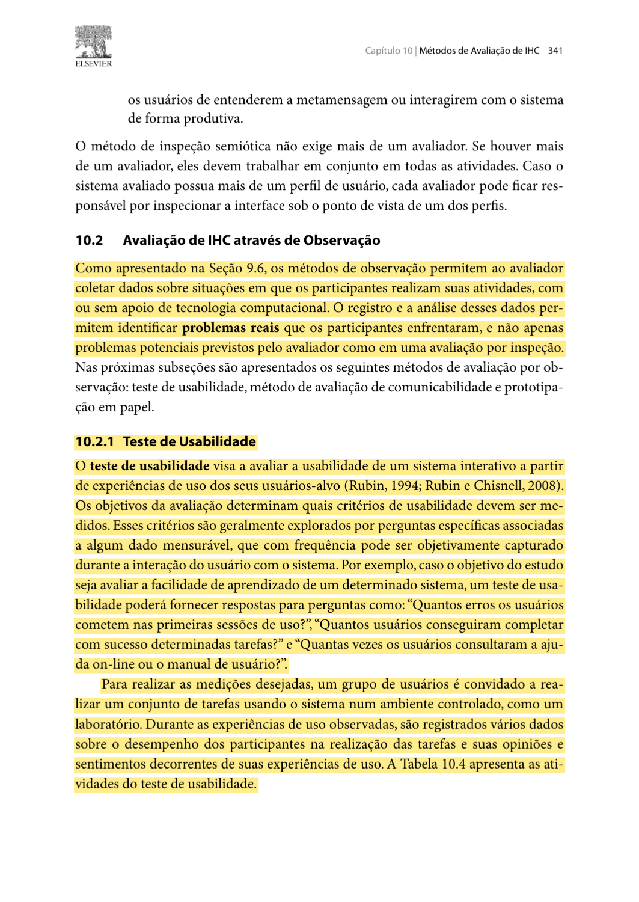
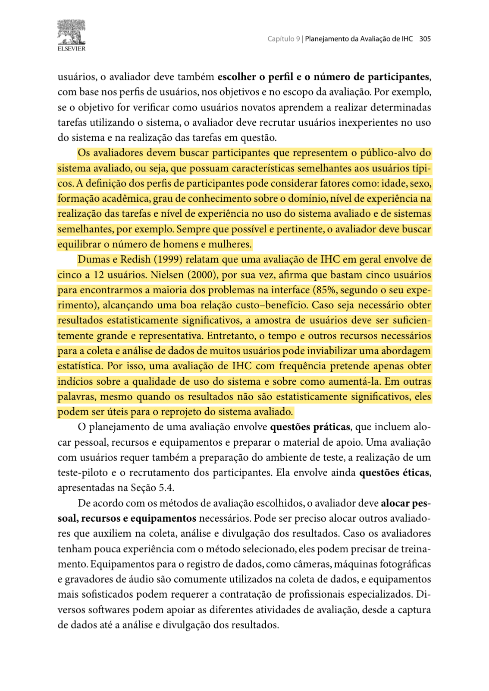
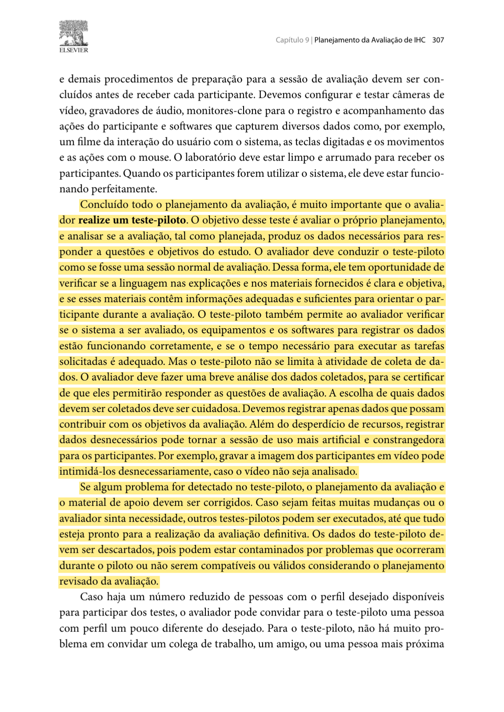
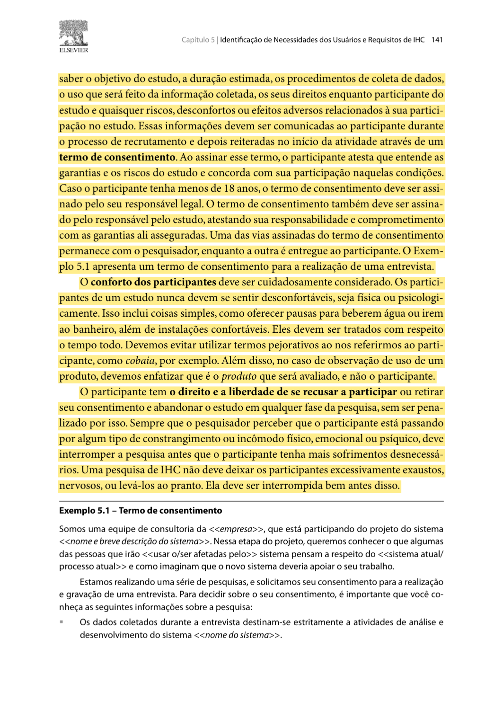

Planejamento da Avaliação do Protótipo de Alta Fidelidade (TAR-09)¶
Histórico de Versão¶
| Data | Versão | Descrição | Autor(es) | Revisor(es) | Declaração de uso de IA |
|---|---|---|---|---|---|
| 03/11/2026 | 1.0 |
Criação do planejamento individual da avaliação do Protótipo de Alta Fidelidade (Figma) da TAR-09 (Pedido de aumento do limite diário do Vale-Transporte) via DECIDE. | Tomás Rocho | Rodrigo Carvalho | Claude (Anthropic) - usado para estruturação do texto e formatação Markdown da página |
Neste documento, apresenta-se o Planejamento da Avaliação do Protótipo de Alta Fidelidade referente à TAR-09 (Solicitar Aumento do Limite Diário de Uso do Vale-Transporte). O protótipo será construído no Figma, no formato de tela de celular, e representa o fluxo "Meu Vale-Transporte foi recusado" no site da SEMOB-DF: o passageiro descobre por que o cartão foi recusado, pede mais passagens por dia pelo celular, recebe um protocolo e acompanha o pedido.
Este é o terceiro ciclo de design e avaliação da TAR-09. O fluxo apareceu primeiro no Storyboard 05 (Nível 1) e depois foi representado em papel, conforme o Planejamento da Avaliação do Protótipo de Papel (Nível 2). Agora as telas ganham a aparência, os textos e a navegação que se espera do produto final, seguindo o Guia de Estilo do Grupo 05.
A avaliação será feita com representantes da persona Heitor Santos Júnior. O planejamento segue o Framework DECIDE (Barbosa; Silva, 2010, p. 312–313; Preece; Rogers; Sharp, 2005), em seis etapas: Determinar objetivos, Explorar perguntas, Choose (Escolher) métodos, Identificar questões práticas, Decidir questões éticas e Evaluate (Avaliar e interpretar os dados).
1. Fundamentação: por que um protótipo de alta fidelidade agora¶
Preece, Rogers e Sharp (2005, Cap. 8) explicam que protótipos de baixa fidelidade são usados no início do design e que os de fidelidade mais alta, como implementações limitadas em software, são usados mais tarde (p. 281). O protótipo de alta fidelidade "utiliza materiais que você espera que estejam no produto final" e "se parece muito mais com algo acabado" (p. 265).
A Tabela 1 resume o que o capítulo diz sobre esse tipo de protótipo e como isso afeta este planejamento.
Tabela 1 — O que o Capítulo 8 de Preece, Rogers e Sharp (2005) muda neste planejamento
| O que o livro diz | Página | Consequência para a avaliação da TAR-09 |
|---|---|---|
| O protótipo de alta fidelidade é totalmente interativo, tem uso conduzido pelo usuário, define o esquema de navegação e tem o mesmo look and feel do produto final (Tabela 8.1). | 266 | Diferente do papel, não haverá "computador" humano. O próprio participante toca no celular, e a avaliação pode verificar a navegação, os textos e o visual definitivos. |
| A prototipação vertical oferece bastante detalhe para poucas funções; a horizontal oferece muitas funções com pouco detalhe. | 266 | O protótipo é vertical: apenas o fluxo da TAR-09, com todos os estados (erro de foto, documento faltando, protocolo, aviso). Os outros atalhos da página inicial existem só para não induzir a escolha. |
| Segundo Rettig (1994), em alta fidelidade os revisores comentam aspectos superficiais em vez do conteúdo, um único bug pode interromper o teste e o protótipo pode elevar demais as expectativas. | 265–266 | (a) as perguntas focam na tarefa, e não em cores; (b) todos os caminhos são conferidos no teste piloto; (c) o participante é avisado de que é um protótipo e que nenhum pedido real é enviado. |
| Os protótipos envolvem concessões: no software algumas funções podem estar ausentes ou serem rudimentares. | 266 | A câmera, o WhatsApp e a análise da SEMOB serão simulados por telas do Figma. Isso será dito ao participante e registrado como limitação no relato. |
| As oito regras de ouro de Shneiderman: consistência, feedback informativo, diálogos que encerram as ações, prevenção de erros, reversão fácil das ações, controle do usuário e redução da carga de memória. | 285–287 | As regras servem de critério para as perguntas Q05 a Q07 (erro de foto, documento faltando, voltar sem perder dados e confirmação final). |
| Toda página web deve responder: Onde estou? O que é apresentado aqui? Onde posso ir? (Quadro 8.7). | 292 | Usada na pergunta Q08, sobre a orientação do participante dentro do pedido em três passos. |
Fonte: Elaborado por Tomás Rocho (2026), a partir de Preece, Rogers e Sharp (2005, Cap. 8).
2. D — Determinar os Objetivos da Avaliação¶
A avaliação é formativa: o objetivo é encontrar problemas de interação no protótipo antes da versão final, e não comparar estatisticamente interfaces. Barbosa e Silva (2010, p. 303) indicam que os objetivos e as perguntas da avaliação guiam a escolha do método.
2.1 Objetivo geral¶
Verificar se trabalhadores que usam o Vale-Transporte e pegam vários ônibus por dia conseguem, sozinhos e pelo celular, entender por que o cartão foi recusado, pedir o aumento do limite diário e acompanhar o pedido no protótipo do Figma.
2.2 Objetivos específicos¶
- Encontrar o serviço: verificar se o atalho "Meu Vale-Transporte foi recusado" é reconhecido na página inicial, entre os outros serviços.
- Entender a recusa: verificar se a tela "Você usou 8 de 8 passagens hoje" deixa claro que o problema é o limite diário, e não falta de saldo, e que as integrações também contam.
- Avaliar o pedido em três passos: observar se o participante descreve a rotina, envia as fotos dos documentos e a declaração do RH sem ajuda, e se sabe em que passo está.
- Avaliar a prevenção e a recuperação de erros: verificar se as mensagens de foto ilegível e de documento faltando explicam o problema e permitem corrigir sem perder o que já foi preenchido, como pede o Guia de Estilo — Elementos de ação (seções 2.3 e 2.4).
- Avaliar o feedback final e o acompanhamento: verificar se o protocolo, a consulta do andamento e o aviso pelo WhatsApp dão segurança de que o pedido foi recebido.
- Cobrir o que o protótipo de papel não verificou: no Nível 2, o participante concluiu as três tarefas sem ajuda e nenhum problema foi encontrado, mas ficaram as pendências PE-01 a PE-04 do Relato dos Resultados do Protótipo de Papel (tempo das tarefas, estados de erro não usados, falta de piloto e um único participante).
3. E — Explorar as Perguntas a Serem Respondidas¶
As perguntas abaixo orientam a observação e a entrevista pós-teste. Elas mantêm a numeração das perguntas do protótipo de papel sempre que o assunto é o mesmo, para que os resultados dos dois níveis possam ser comparados.
Tabela 2 — Perguntas da Avaliação do Protótipo de Alta Fidelidade
| ID | Foco | Pergunta da Avaliação | Critério de Aceitação | Dado a Registrar |
|---|---|---|---|---|
| Q01 | Encontrar o serviço | O participante encontra o atalho "Meu Vale-Transporte foi recusado" na página inicial? | Toca no atalho certo sem ajuda e sem entrar antes em outro serviço. | Primeiro toque, desvios, tempo até o atalho. |
| Q02 | Entender a recusa | Depois de informar o cartão, o participante entende por que ele foi recusado? | Explica com as próprias palavras que passou do limite de passagens do dia, e não que está sem saldo. | Fala durante o think aloud e resposta na entrevista. |
| Q03 | Integrações | O participante entende que cada integração também conta como uma passagem? | Ao ser perguntado, diz que cada ônibus conta, mesmo com integração. | Resposta na entrevista. |
| Q04 | Descrever a rotina e enviar documentos | O participante preenche a rotina e envia os documentos e a declaração do RH sem ajuda? | Conclui os passos 1 a 3 sem perguntar o que deve colocar e sem confundir os documentos. | Conclusão, hesitações, pedidos de ajuda. |
| Q05 | Recuperação de erro | Quando a foto é recusada por estar ilegível, o participante entende o problema e tira outra? | Lê a mensagem e toca em "Tirar outra foto" sem ajuda. | Reação à mensagem, tempo até corrigir. |
| Q06 | Prevenção de erro | Se tentar enviar sem a declaração do RH, o participante entende o aviso e volta ao passo certo? | Volta ao passo 3 pelo próprio aviso, sem perder a rotina e as fotos já enviadas. | Caminho seguido, dados preservados. |
| Q07 | Encerramento e acompanhamento | Depois de enviar, o participante sabe que o pedido foi recebido, o que acontece a seguir e como acompanhar? | Cita o protocolo, o aviso pelo WhatsApp e mostra onde consultaria o andamento. | Fala na tela de confirmação e na tarefa TAR-09.3. |
| Q08 | Orientação no fluxo | Em qualquer tela do pedido, o participante sabe onde está, o que a tela mostra e para onde pode ir? | Diz em que passo está ("passo 2 de 3") e como voltar ou desistir. | Resposta quando o avaliador pergunta "Onde você está agora?". |
| Q09 | Opinião sobre a experiência | O que o participante achou claro, confuso ou faltando, e como compara com ir a um posto de atendimento? | Opinião aberta; não há resposta certa. | Respostas da entrevista pós-teste. |
Fonte: Elaborado por Tomás Rocho (2026).
4. C — Choose (Escolher) os Métodos de Avaliação¶
O método escolhido é o teste de usabilidade com observação de uso, seguido de entrevista curta. Barbosa e Silva (2010, p. 341) descrevem esse método como a execução de tarefas por representantes dos usuários, com o registro do desempenho, das opiniões e dos sentimentos que surgem da experiência.
- Justificativa: com o protótipo totalmente interativo, o participante conduz o uso sozinho (Preece; Rogers; Sharp, 2005, p. 266). Assim é possível observar onde ele toca, quanto tempo leva, onde erra e como se recupera, o que responde às perguntas Q01 a Q08.
- Técnica complementar: o participante será convidado a pensar em voz alta (think aloud), dizendo o que procura e o que entendeu de cada tela.
- Entrevista pós-teste: ao final, o avaliador faz Q02, Q03, Q07 e Q09 de forma aberta, para confirmar o que foi observado.
- Uso dos números: tempo, erros e pedidos de ajuda servem para explicar onde estão os problemas. Não há metas numéricas e não se pretende tirar conclusões estatísticas.
4.1 O protótipo avaliado¶
O protótipo será montado no Figma, com frames de celular ligados pelo modo Prototype. As telas são as mesmas do protótipo de papel. Como o Relato dos Resultados do Protótipo de Papel não encontrou problemas, os textos e a ordem das telas foram mantidos:
Tabela 3 — Telas e Estados do Protótipo no Figma
| ID | Tela ou Estado | Conteúdo Principal | Regra do Guia de Estilo ou Princípio Aplicado |
|---|---|---|---|
| T1 | Página inicial da SEMOB-DF | Seis cartões de serviço do mesmo tamanho, entre eles "Meu Vale-Transporte foi recusado". | Cartão de serviço com rótulo textual (Guia, Elementos de ação, 4.1 e 4.2). |
| T2 | Informar o cartão | Campo "Número do cartão" com teclado numérico e botão "Continuar". | Rótulo que expressa o efeito da ação. |
| T3 | Explicação da recusa | "Você usou 8 de 8 passagens hoje", aviso "As integrações também contam" e os botões "Pedir mais passagens por dia" e "Prefiro entregar no posto". | Feedback informativo (Shneiderman). |
| T4–T6 | Pedido em três passos | Indicador "Passo 1 de 3", "2 de 3" e "3 de 3": rotina, fotos dos documentos e declaração do RH (com "Baixar modelo para o RH"). Botão "Voltar" em todos os passos. | Onde estou? (Quadro 8.7); reversão fácil; preservação dos dados (Guia, 2.3). |
| E1 | Erro de foto ilegível | "Não conseguimos ler o documento. Tire outra foto com mais luz." e botão "Tirar outra foto". | Tratamento de erros (Guia, 2.4); tela de erro e recuperação (Guia, Vocabulário 3.8). |
| E2 | Documento faltando | "Falta a declaração do RH" com botão que leva direto ao passo 3. | Prevenção de erros (Shneiderman). |
| T7 | Revisão do pedido | Resumo da rotina e dos documentos, com botão "Enviar pedido". | Diálogo que encerra a ação. |
| T8 | Confirmação | "Pedido enviado!", protocolo 2026-0451, prazo e "Vamos te avisar pelo WhatsApp". | Feedback final e protocolo (Guia, Vocabulário 3.7). |
| T9 | Acompanhar pedido | Campo de protocolo e situação "Em análise — prazo de até 5 dias úteis". | Visibilidade do estado. |
| N1 | Notificação simulada | Tela que imita uma mensagem do WhatsApp: "SEMOB: seu novo limite diário foi aprovado e já está valendo". | Simulação declarada (concessão do protótipo). |
Fonte: Elaborado por Tomás Rocho (2026).
- Simulações: tocar no botão da câmera mostra uma prévia de foto pronta (na foto do comprovante, mostra de propósito o erro E1). Nenhuma câmera real é aberta e nenhum documento real é fotografado.
- Dados fictícios: o número do cartão, o protocolo e os documentos são fictícios e já aparecem preenchidos quando o participante toca no campo.
4.2 Roteiro de tarefas¶
As tarefas são as mesmas do protótipo de papel, para permitir a comparação. São lidas em voz alta, uma de cada vez, a partir do Cenário 9: "Você trabalha com manutenção e passou o dia indo de prédio em prédio de ônibus. Na volta para casa, o cartão do Vale-Transporte não passou na catraca. Use o site da SEMOB no celular para resolver."
Tabela 4 — Tarefas do Teste de Usabilidade
| ID Tarefa | Enunciado lido ao participante | Critério de Conclusão | Telas | Perguntas |
|---|---|---|---|---|
| TAR-09.1 | "Descubra por que o seu cartão foi recusado." | Chega à T3 e explica a recusa como limite do dia. | T1, T2, T3 | Q01, Q02, Q03 |
| TAR-09.2 | "Peça para poder usar mais passagens por dia. Os documentos que você precisa estão no celular." | Chega à T8 com o protocolo na tela. | T4–T8, E1, E2 | Q04, Q05, Q06, Q08 |
| TAR-09.3 | "Passaram alguns dias. Veja se o seu pedido foi aprovado." | Mostra a situação do pedido na T9 ou lê o aviso N1. | T9, N1 | Q07 |
Fonte: Elaborado por Tomás Rocho (2026).
O avaliador não explica a interface nem dá dicas. Quando o participante perguntar algo, a resposta é "O que você acha que acontece se tocar aí?". Se ele ficar parado por mais de 2 minutos numa tarefa ou pedir para parar, a tarefa é encerrada e registrada como não concluída.
5. I — Identificar e Administrar as Questões Práticas¶
5.1 Participantes¶
- Perfil: trabalhadores com carteira assinada que usam o Vale-Transporte e pegam vários ônibus no mesmo dia por causa do trabalho (técnico de manutenção, prestador de serviço, entregador, cuidador), que usam o celular no dia a dia (WhatsApp, banco), como a persona Heitor.
- Quantidade: 3 participantes, identificados como P01, P02 e P03. Barbosa e Silva (2010, p. 305) apresentam cinco participantes como referência de custo-benefício. A equipe planeja três por causa do prazo da Entrega 7 (04/11 a 15/11) e da dificuldade de encontrar pessoas com esse perfil fora do horário de trabalho. Essa diferença será informada no relato como limitação.
- Restrição: nenhum participante pode ter participado da avaliação do storyboard ou do protótipo de papel da TAR-09, para que ninguém já saiba como o fluxo funciona.
- Recrutamento: rede de contatos da equipe (familiares, vizinhos, colegas de trabalho de conhecidos), sob responsabilidade de Tomás Rocho.
5.2 Papéis da equipe na sessão¶
- Condutor (Tomás Rocho): recebe o participante, lê o TCLE, lê as tarefas, faz a entrevista pós-teste e não interfere durante as tarefas.
- Observador (Rodrigo Carvalho): controla a gravação, cronometra cada tarefa e preenche a ficha de observação com toques errados, hesitações, pedidos de ajuda e falas do participante.
5.3 Infraestrutura e materiais¶
- Dispositivo: celular do condutor com o aplicativo Figma em modo de apresentação do protótipo, bateria carregada e carregador por perto.
- Configuração do Figma: desativar a opção "Show hotspot hints on click", que destaca em azul as áreas clicáveis quando o participante toca no lugar errado e, por isso, daria dicas.
- Contingência: uma cópia do protótipo aberta no notebook e uma conexão de dados móveis, caso o Wi-Fi do local falhe.
- Gravação: gravação da tela do celular com áudio. O rosto do participante não é filmado.
- Materiais impressos: TCLE, folha com o cenário e as tarefas, ficha de observação e roteiro da entrevista.
- Ficha de observação: uma linha por tarefa, com início e fim, conclusão (sem ajuda, com ajuda, não concluída), erros, retornos, pedidos de ajuda, falas marcantes e minuto da gravação.
- Local: sala silenciosa na FCTE/UnB ou local de preferência do participante, para evitar deslocamento.
5.4 Cronograma¶
Tabela 5 — Cronograma da Avaliação do Protótipo de Alta Fidelidade
| Etapa | Data | Responsável |
|---|---|---|
| Protótipo navegável pronto no Figma | até 07/11/2026 | Tomás Rocho |
| Teste piloto | 08/11/2026 (domingo), 18:00 | Tomás Rocho e Rodrigo Carvalho |
| Ajustes após o piloto | 09/11/2026 | Tomás Rocho |
| Sessão P01 | 10/11/2026 (terça-feira), 19:00 | Tomás Rocho e Rodrigo Carvalho |
| Sessão P02 | 12/11/2026 (quinta-feira), 19:00 | Tomás Rocho e Rodrigo Carvalho |
| Sessão P03 | 14/11/2026 (sábado), 10:00 | Tomás Rocho e Rodrigo Carvalho |
| Relato dos resultados | até 15/11/2026 | Tomás Rocho |
Fonte: Elaborado por Tomás Rocho (2026). Os horários fora do horário comercial consideram que o perfil dos participantes trabalha durante o dia.
5.5 Duração da sessão¶
Tabela 6 — Etapas e Tempo Previsto de Cada Sessão
| Etapa | Tempo |
|---|---|
| Recepção, explicação e TCLE | 5 min |
| Perguntas rápidas sobre o uso do Vale-Transporte e do celular | 3 min |
| Tarefas TAR-09.1, TAR-09.2 e TAR-09.3 | 15 min |
| Entrevista pós-teste e encerramento | 7 min |
| Total previsto | 30 min |
Fonte: Elaborado por Tomás Rocho (2026). O tempo será ajustado depois do teste piloto.
Custo estimado: R\$ 0,00 (Figma no plano gratuito, celular e notebook próprios, impressões feitas na universidade).
5.6 Teste piloto¶
Antes das sessões, será feito um teste piloto completo no dia 08/11/2026, com um integrante da equipe que não participou da construção do fluxo da TAR-09 no papel de participante. Barbosa e Silva (2010, p. 306–307) recomendam o piloto para conferir o material e o procedimento.
- O que será verificado: se todos os toques levam à tela certa e nenhum caminho fica sem saída (o "único bug" de Rettig); se os estados E1 e E2 aparecem quando devem; se as tarefas ficam claras lidas em voz alta; se 15 minutos bastam para as tarefas; se a gravação da tela e o áudio funcionam; e se as perguntas da ficha respondem Q01 a Q09.
- Ajustes: ligações erradas no Figma, textos confusos nas tarefas e problemas na gravação são corrigidos no dia 09/11.
- Uso dos dados: os dados do piloto servem apenas para ajustar o protótipo e o procedimento e não entram nos resultados.
6. D — Decidir como Lidar com as Questões Éticas¶
A sessão segue as Resoluções nº 466/2012 e nº 510/2016 do Conselho Nacional de Saúde (CNS) e as orientações de Barbosa e Silva (2010, p. 140–141):
- Consentimento informado: antes de começar, o condutor lê com o participante o Termo de Consentimento Livre e Esclarecido (TCLE), explica que o objetivo é acadêmico, quanto tempo dura e o que será registrado, e colhe a assinatura.
- Quem é avaliado é o protótipo: o condutor explica que qualquer dificuldade mostra um problema da tela, e não do participante.
- Autorização específica de gravação: o participante autoriza à parte a gravação da tela e do áudio. Se não autorizar, a sessão acontece só com anotações.
- Participação voluntária: o participante pode pular uma tarefa, recusar uma pergunta, pedir uma pausa ou encerrar a sessão a qualquer momento, sem nenhum prejuízo.
- Anonimato: o participante é identificado apenas como P01, P02 ou P03 na ficha, nos arquivos e no relato. A lista que liga o código ao nome fica só com o condutor e é apagada depois da entrega do relato.
- Nenhum dado real: o protótipo usa número de cartão, protocolo e documentos fictícios. O condutor pede que o participante não fale o número do próprio cartão, CPF, endereço ou empregador.
- Expectativas: o condutor explica que o protótipo não envia pedido nenhum à SEMOB-DF e que o serviço ainda não existe, para que o participante não saia achando que já pode usá-lo (Preece; Rogers; Sharp, 2005, p. 265–266).
- Sem julgamento sobre o benefício: falar sobre o limite de passagens não é uma verificação de uso indevido do Vale-Transporte.
- Guarda das gravações: os vídeos ficam em pasta privada da equipe e são apagados ao fim da disciplina.
7. E — Avaliar, Interpretar e Apresentar os Dados¶
A análise segue as etapas de interpretação e consolidação de Barbosa e Silva (2010, p. 310–312):
- Logo após cada sessão: condutor e observador comparam as anotações e completam a ficha do participante.
- Interpretação por participante: o observador revisa a gravação e marca hesitações, toques errados, retornos, pedidos de ajuda e falas. Com isso, responde Q01 a Q09 para aquele participante.
- Consolidação entre participantes: os problemas parecidos dos três participantes são juntados, contando em quantos participantes cada um apareceu. As perguntas que ficaram sem resposta são indicadas.
- Separação entre fato e opinião: cada problema é descrito em três partes: o que foi observado, a possível causa na tela e a recomendação.
- Severidade: cada problema recebe um nível de 0 a 4 (Nielsen, 1994), e a prioridade de correção considera a severidade, a recorrência e o custo de corrigir.
- Comparação com o Nível 2: como o protótipo de papel não teve problemas, verifica-se se o fluxo continua sem problemas na versão interativa e se as pendências PE-01 a PE-04 foram cobertas.
- Limites das conclusões: o relato deixa claro que os resultados valem para este protótipo, estas tarefas e estes três participantes, e indica onde as simulações (câmera, WhatsApp) podem ter influenciado o comportamento.
- Apresentação: os resultados são organizados conforme o Planejamento do Relato dos Resultados do Protótipo de Alta Fidelidade.
8. Evidências do Livro de Barbosa e Silva¶
As figuras abaixo mostram os trechos grifados do livro de Barbosa e Silva (2010) usados neste planejamento. Os trechos do Capítulo 8 de Preece, Rogers e Sharp (2005) estão indicados com a página na Tabela 1 e na seção 9.
Figura 1 — As seis atividades do framework DECIDE (p. 313).

Fonte: Barbosa e Silva (2010, p. 313).
Figura 2 — Definição do teste de usabilidade (p. 341).

Fonte: Barbosa e Silva (2010, p. 341).
Figura 3 — Perfil e quantidade de participantes (p. 305).

Fonte: Barbosa e Silva (2010, p. 305).
Figura 4 — Finalidade do teste piloto e descarte dos seus dados (p. 307).

Fonte: Barbosa e Silva (2010, p. 307).
Figura 5 — Consentimento, conforto e direito de interromper a participação (p. 141).

Fonte: Barbosa e Silva (2010, p. 141).
9. Localização das Referências nos Livros¶
- PREECE, J.; ROGERS, Y.; SHARP, H. Design de Interação, Capítulo 8 — Design, Prototipação e Construção: Seção 8.2.4 (Prototipação de alta-fidelidade), p. 265–266; Tabela 8.1 e Seção 8.2.5 (Concessões na prototipação), p. 266; Seção 8.3.4 (Utilizando protótipos no design conceitual), p. 281; Seção 8.4.1 (Recomendações para o design físico), p. 285–287; Quadro 8.7 (Fazendo design para a web), p. 292.
- BARBOSA, S. D. J.; SILVA, B. S. Interação Humano-Computador: Seção 5.4, p. 140–141 (ética); Seções 9.7 e 9.8, p. 303–313 (preparação, interpretação, relato e DECIDE); Seção 10.2.1, p. 341–343 (teste de usabilidade).
10. Declaração sobre o Uso de IA Generativa¶
Em cumprimento às normas do Plano de Ensino da disciplina, declara-se que o Claude (Anthropic) foi usado para auxiliar na estruturação do texto e na formatação das tabelas em Markdown. A definição dos objetivos, das perguntas, das telas do protótipo, das tarefas, dos participantes e da logística, e a revisão final, são de responsabilidade do integrante Tomás Rocho.
11. Referências Bibliográficas¶
- BARBOSA, Simone Diniz Junqueira; SILVA, Bruno Santana da. Interação Humano-Computador. Rio de Janeiro: Elsevier/Campus, 2010. Seção 5.4, p. 140–141; seções 9.7–9.8, p. 303–313; seção 10.2.1, p. 341–343.
- BRASIL. Conselho Nacional de Saúde. Resolução nº 466, de 12 de dezembro de 2012. Aprova diretrizes e normas regulamentadoras de pesquisas envolvendo seres humanos. Brasília: Diário Oficial da União, 2013.
- BRASIL. Conselho Nacional de Saúde. Resolução nº 510, de 07 de abril de 2016. Regulamenta as pesquisas em Ciências Humanas e Sociais. Brasília: Diário Oficial da União, 2016.
- NIELSEN, Jakob. Usability Engineering. San Diego: Academic Press, 1994.
- PREECE, Jennifer; ROGERS, Yvonne; SHARP, Helen. Design de Interação: além da interação homem-computador. Porto Alegre: Bookman, 2005. Cap. 8, p. 259–297.
- SALES, André Barros de. Plano de Ensino: Interação Humano Computador. Brasília: Universidade de Brasília, FCTE/UnB, 2026.
Autor: Tomás Rocho
Revisor: Rodrigo Carvalho